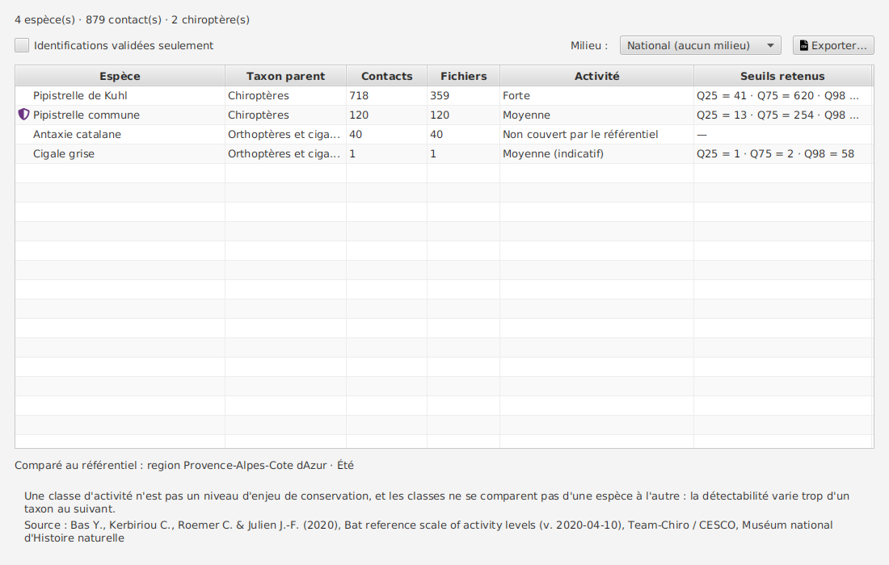
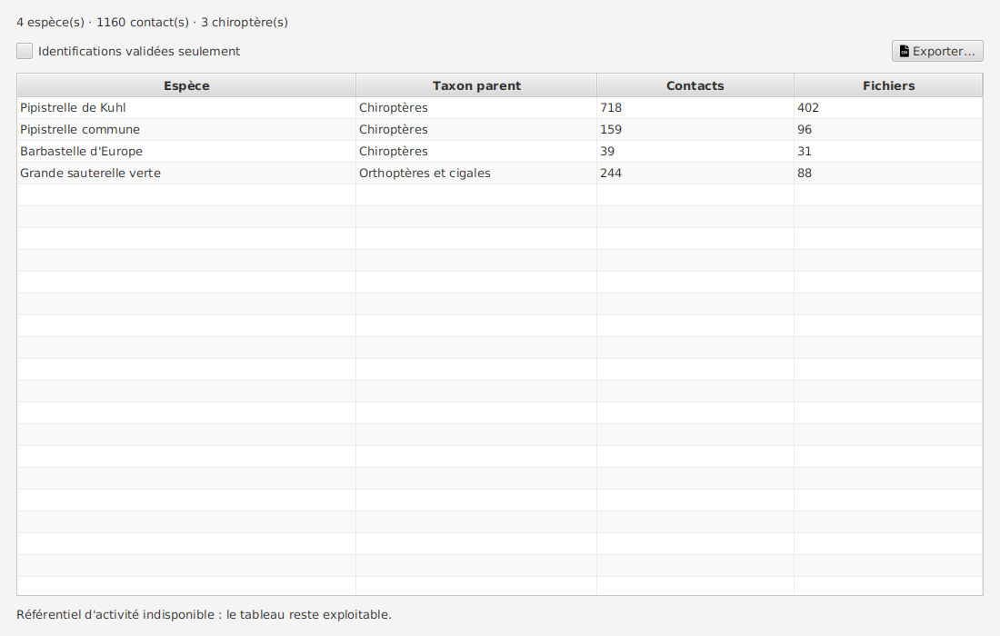

Synthèse de la nuit¶
Cet écran répond à la question qu'on se pose devant un tableau de comptages : « 718 contacts, c'est beaucoup ? »
Il liste les espèces détectées pendant une nuit et situe chaque nombre par rapport à ce qu'on observe habituellement pour cette espèce, à cette saison, dans cette région et dans ce milieu.
On y arrive depuis l'écran d'un passage, par la carte « Synthèse de la nuit ».

Ce que le tableau montre¶
| Colonne | Ce qu'elle dit |
|---|---|
| Espèce | le taxon retenu : votre correction si vous en avez posé une, sinon la proposition de Tadarida. Un bouclier signale une espèce prioritaire du Plan National d'Actions Chiroptères |
| Contacts | le nombre de cris détectés |
| Fichiers | le nombre de séquences distinctes d'où ils viennent |
| Activité | où se situe ce nombre : Faible, Moyenne, Forte ou Très forte |
| Seuils retenus | les quantiles auxquels votre nombre a été comparé |
Contacts et fichiers ne disent pas la même chose. Deux cents contacts répartis sur deux fichiers, c'est peut-être un individu qui a chassé devant le micro ; deux cents contacts sur cent cinquante fichiers, c'est une activité diffuse toute la nuit. La classe d'activité se calcule sur les contacts ; les fichiers vous disent si ces contacts sont concentrés.
Pourquoi les seuils s'affichent à côté de la classe¶
Une classe seule est un verdict. Une classe accompagnée de « Q75 = 261 · Q98 = 1804 » est une lecture que vous pouvez contester : et c'est ce qu'on attend d'un outil scientifique. Vous voyez sur quoi le produit s'appuie pour dire « Forte ».
Identifications validées seulement¶
Cette bascule ne masque pas des lignes : elle recalcule tout. Une espèce dont aucune observation n'est validée disparaît, les contacts des autres baissent, et leur classe d'activité change en conséquence.
C'est le but : lire la nuit telle que Tadarida la propose, puis telle que vous l'avez validée, et voir l'écart.
Le milieu, qui ne se devine pas¶
La saison se déduit de la date de la nuit, la région du numéro de carré. Le milieu, lui, reste un choix explicite : rien dans l'application ne dit si votre point d'écoute est en forêt ou en ville. Par défaut, la comparaison est donc nationale : plus large, mais jamais fausse.
Le référentiel réellement employé est écrit sous le tableau : « Comparé au référentiel : région Provence-Alpes-Côte d'Azur · Printemps ». Sans cette mention, la classe serait un oracle.
Quand la classe n'est pas donnée¶
La cellule dit toujours pourquoi, plutôt que de rester vide : une case blanche se lirait comme une donnée manquante :
- « Non couvert par le référentiel » : l'espèce lui est étrangère. C'est le cas de la plupart des orthoptères, des oiseaux et du bruit, le référentiel portant sur les chauves-souris ;
- « Pas de seuil pour ce contexte » : l'espèce est au référentiel, mais aucune de ses déclinaisons ne couvre cette région à cette saison ;
- « Forte (indicatif) », ou toute autre classe suivie de (indicatif) : les seuils retenus reposent sur trop peu de nuits. On vous les montre faute de mieux, sans les présenter comme une mesure.
Les deux premières mentions se ressemblent et ne disent pas la même chose. La distinction ne tient pas au groupe de l'espèce : sur la capture ci-dessus, la Cigale grise est un orthoptère et affiche « Pas de seuil pour ce contexte », parce que le référentiel la connaît mais ne la couvre qu'en été.
Si le référentiel manque¶
Il peut arriver que le référentiel d'activité ne soit pas exploitable. L'écran ne se contente alors pas de laisser des cases blanches, qui se liraient comme des données manquantes : les colonnes Activité et Seuils retenus disparaissent, le sélecteur de milieu aussi, et l'écran annonce « Référentiel d'activité indisponible : le tableau reste exploitable ».

La mise en garde et la citation s'effacent avec elles : mettre en garde contre une lecture qu'on n'affiche pas, et créditer une source qu'on n'a pas pu charger, n'aiderait personne.
Vos comptages, eux, restent affichés en entier. Le nombre de contacts est une mesure ; la classe d'activité n'en est qu'une lecture. Perdre la seconde ne doit pas vous priver de la première.
Espèce prioritaire et classe d'activité : deux choses différentes¶
Le bouclier et la classe d'activité se lisent côte à côte sans se confondre. Le premier dit qu'une espèce fait l'objet d'un plan national de conservation ; la seconde dit combien elle a été entendue cette nuit-là, au regard de ce qu'on observe habituellement. Une espèce prioritaire peut très bien afficher une activité faible, et une espèce commune une activité très forte.
C'est aussi pourquoi le bouclier reste affiché quand le référentiel d'activité manque : les deux informations ne viennent pas de la même source et ne dépendent pas l'une de l'autre.
Ce que la classe d'activité ne dit pas¶
Un bloc de mise en garde est affiché en permanence sous le tableau, et il est recopié dans les exports. Deux points comptent :
- une classe d'activité n'est pas un niveau d'enjeu de conservation : ce sont deux lectures différentes, et une espèce à enjeu peut très bien être en activité faible ;
- les classes ne se comparent pas d'une espèce à l'autre : la détectabilité varie trop d'un taxon au suivant pour qu'une « Forte » de Pipistrelle commune et une « Forte » de Barbastelle disent la même chose.
Exporter¶
Le bouton d'export écrit un CSV qui reprend le tableau tel qu'il est affiché : filtres et bascule
compris. En tête du fichier, quatre lignes précédées de # :
- ce que contient le fichier (« Synthèse d'une nuit - VigieChiro Companion ») ;
- le contexte de comparaison (« Comparé au référentiel : milieu Forêt · Été ») ;
- la mise en garde ;
- la source.
Elles sont commentées pour qu'un tableur les affiche comme du texte et qu'un script puisse les sauter, sans les perdre pour autant. Si le référentiel est indisponible, ces lignes cèdent la place à une seule : « Référentiel d'activité indisponible… ». Le fichier ne décrit alors pas une comparaison qui n'a pas eu lieu, et ne crédite pas une source qu'il n'a pas pu charger. Ses colonnes ne changent pas pour autant : un en-tête de colonne est lu par des scripts, le retirer casserait ce que le retrait cherchait à protéger. Si l'avertissement ne voyage pas avec la donnée, il ne sert à rien : un fichier ouvert trois mois plus tard, par quelqu'un qui n'a jamais vu cet écran, doit pouvoir savoir d'où sortent ces classes.
En ligne de commande, synthetiser-passage produit exactement la même chose :
./vigiechiro synthetiser-passage --passage 3 --carre 130711 --milieu Foret --sortie synthese.csv
./vigiechiro synthetiser-passage --passage 3 --format json
D'où viennent les seuils¶
Du référentiel national ACTICHIRO / Vigie-Chiro, construit sur les données du protocole Point Fixe :
Bas Y., Kerbiriou C., Roemer C. & Julien J.-F. (2020), Bat reference scale of activity levels (v. 2020-04-10), Team-Chiro / CESCO, Muséum national d'Histoire naturelle.
Ces données sont libres d'usage avec citation obligatoire. C'est pourquoi la source est nommée à l'écran et recopiée dans chaque export : un référentiel scientifique qui voyage sans sa source est une donnée orpheline.